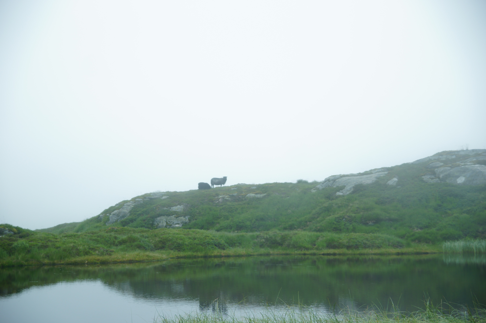

Turer i Vestland
Info
Dette er en oversikt over turer i Vestland, Norges fineste strøk, stor variasjon i turterreng
Fjellvettreglene
- Planlegg turen og meld fra hvor du går.
- Tilpass turen etter evne og forhold.
- Ta hensyn til vær- og skredvarsel.
- Vær forberedt på uvær og kulde, selv på korte turer.
- Ta med nødvendig utstyr for å kunne hjelpe deg selv og andre.
- Ta trygge veivalg. Gjenkjenn skredfarlig terreng og usikker is.
- Bruk kart og kompass. Vit alltid hvor du er.
- Vend i tide, det er ingen skam å snu.
- Spar på kreftene og søk ly om nødvendig.

Kiellandbu, i stølsheimen kjent for fantastisk utsikt og bratt terreng

Kabusen, er en bratt tur i Breheimen med Jostedalsbreen. Turen starter rett ved Haukedalsvatner

Vidden i Bergen, er en klassiker for alle Bergensere, kan man kalle seg en ekte bergenser hvis man ikke har gått vidden minst en gang?